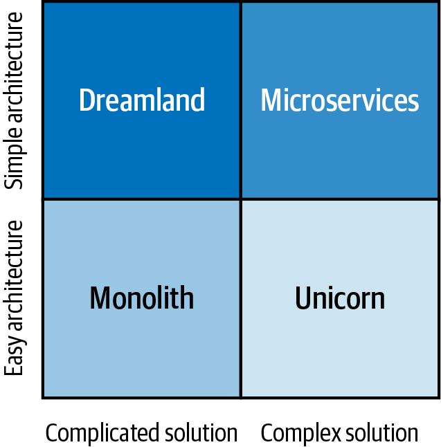

Xin chúc mừng, bạn đã đi tới chương cuối cùng! Dù có thể bạn đang đi đến điểm kết của hành trình cùng chúng tôi, chúng tôi hy vọng đây mới chỉ là khởi đầu của một hành trình dài và nhiều thành quả trong việc triển khai microservices thành công trên các dự án thực tế. Chúng tôi không hề che giấu việc mình là những người rất ngưỡng mộ kiến trúc microservices và những lợi ích mà nó có thể mang lại khi được áp dụng trong đúng bối cảnh, với đúng mục đích và năng lực. Đây tuyệt nhiên không phải là lựa chọn duy nhất và cũng không bao giờ nên được triển khai nếu chưa hiểu hết mọi hệ quả, nhưng chắc chắn nó có thể là một lựa chọn rất mạnh mẽ trong bộ công cụ kiến trúc của bạn.
Chúng tôi đã chứng kiến nhiều dự án microservices thành công. Đồng thời cũng không thiếu những nỗ lực áp dụng microservices thất bại. Động lực lớn nhất của chúng tôi khi viết cuốn sách này là tăng cơ hội thành công cho người đọc, nếu họ lựa chọn hiện thực hệ thống của mình theo phong cách microservices. Chúng tôi cố gắng làm điều đó bằng cách đưa ra những hướng dẫn thực dụng, từng bước một, về thời điểm, lý do và cách triển khai microservices, giải thích các khái niệm cốt lõi và minh họa cách hiện thực những khái niệm đó bằng các ví dụ đơn giản. Chúng tôi hy vọng mình đã đạt được mục tiêu biến những khái niệm trừu tượng thành lời giải thích từng bước dễ tiếp cận hơn, nhưng quan trọng nhất, chúng tôi hy vọng bạn đã thích đọc cuốn sách này, ngay cả khi nó chỉ mang lại cho bạn một vài ý tưởng then chốt mà bạn có thể áp dụng khi xây dựng các hệ thống của riêng mình.
Trước khi chia tay, chúng tôi muốn chia sẻ vài suy nghĩ cuối cùng để tổng kết cách chúng tôi nhìn nhận các quyết định kiến trúc trong microservices, cùng một cách tiếp cận mà chúng tôi khuyến nghị để liên tục đo lường tiến độ của một hành trình chuyển đổi, nếu bạn quyết định bắt đầu một hành trình như vậy.
Trong suốt cuốn sách này, chúng tôi đã khẳng định rằng microservices phù hợp nhất khi được sử dụng để hiện thực các hệ thống lớn, phức tạp và liên tục thay đổi. Xét một cách trực giác, nhận định này hoàn toàn hợp lý: bản thân kiến trúc microservices không hề đơn giản, nên việc bắt đầu hành trình đó phải thật sự xứng đáng, có lẽ là khi nó giúp giải quyết một thứ còn phức tạp hơn nữa. Nhưng bản chất của độ phức tạp là gì, và rốt cuộc microservices làm giảm độ phức tạp bằng cách nào, nếu thực sự có?
Một công trình kinh điển về độ phức tạp phần mềm là bài viết năm 1986 của Fred Brooks, “No Silver Bullet”, trong đó ông nhận xét rất xác đáng:
Không có một tiến bộ đơn lẻ nào, dù về công nghệ hay kỹ thuật quản lý, tự thân nó hứa hẹn mang lại sự cải thiện năng suất, độ tin cậy hay tính đơn giản lên tới cả một bậc độ lớn.
Brooks tiếp tục giải thích rằng nguyên nhân của hiện tượng này là sự hiện diện của độ phức tạp cốt lõi trong các hệ thống phần mềm. Dù trong bất kỳ codebase nào cũng luôn tồn tại một phần độ phức tạp ngẫu nhiên, tức độ phức tạp phát sinh từ chính các lựa chọn hiện thực của chúng ta, nhưng phần lớn độ phức tạp mà chúng ta phải đối diện trong các hệ thống phần mềm lại không phải ngẫu nhiên; nó gắn với chính bản chất của việc mô hình hóa miền bài toán. Đó là “độ phức tạp cốt lõi”, theo Brooks, bao gồm các tập dữ liệu tinh vi, mối quan hệ giữa các phần tử dữ liệu, thuật toán và luồng gọi hàm đại diện cho mô hình mà một hệ thống đang cố gắng biểu diễn. Nếu chúng ta cố đơn giản hóa một hệ thống vượt quá độ phức tạp cốt lõi của nó, chúng ta sẽ làm mất đi mô hình nền tảng của hệ thống, và khi đó nó sẽ không còn là chính hệ thống đó nữa.
Khi nói đến microservices, những người áp dụng sớm thường bị thu hút bởi lời hứa rằng microservices sẽ khiến việc xây dựng các hệ thống phức tạp... chờ chút nhé... trở nên đơn giản hơn! Hầu như ai cũng muốn microservices giúp họ hoàn thành công việc dễ dàng hơn thay vì làm cuộc sống trở nên khó khăn không cần thiết, nên lời hứa “mọi thứ sẽ dễ hơn” đương nhiên là một động lực rất mạnh. Những lời giải thích nhanh, mang tính cảm tính thường được đưa ra ngay: bằng cách hiện thực một hệ thống “lớn hơn” như một tập hợp gồm rất nhiều microservice nhỏ và đơn giản, toàn bộ quá trình sẽ trở nên đơn giản hơn! Những người hoài nghi có thể lập tức chỉ ra rằng dù từng microservice có thể nhỏ và đơn giản, việc điều phối một số lượng lớn chúng thành một hệ thống gắn kết và phức tạp không thể được kỳ vọng là một nhiệm vụ dễ dàng. Và họ nói đúng; nhưng quan trọng hơn, với những ai đã đọc “No Silver Bullet” của Brooks, sẽ còn một câu hỏi khó chịu nữa nảy sinh: liệu microservices có phá vỡ luận điểm của Brooks rằng không có cách nào loại bỏ độ phức tạp cốt lõi hay không? Hay kiến trúc microservices chỉ đơn thuần xử lý phần độ phức tạp ngẫu nhiên của hệ thống, và làm điều đó tốt đến mức chúng ta vẫn cảm nhận được sự cải thiện?
Sự thật là không phải trường hợp nào ở trên cũng đúng. Khái niệm microservices không chỉ xoay quanh độ phức tạp ngẫu nhiên và cũng không phải là một phương pháp nhằm cải thiện vệ sinh lập trình; đó là một cách tiếp cận khác biệt về bản chất. Và không, nó không phủ nhận nhận định của Brooks. Ngược lại, nó đạt được mục tiêu của mình hoàn toàn phù hợp với nhận định đó. Bạn không thể loại bỏ độ phức tạp cốt lõi, nhưng bạn có thể dịch chuyển nó: bạn có thể chuyển độ phức tạp cốt lõi từ phần này của hệ thống sang phần khác. Điều này có vẻ không phải vấn đề lớn, trừ khi những phần khác nhau của hệ thống đòi hỏi những mức nỗ lực khác nhau.
Nói đơn giản, khi xây dựng bất kỳ hệ thống phần mềm nào cũng sẽ có phần hiện thực của nó, tức mã nguồn, và phần vận hành của nó, tức triển khai và điều phối. Chúng ta có thể làm cho mã nguồn đơn giản hơn bằng cách chia nó thành nhiều microservice nhỏ. Đổi lại, sự thay đổi đó sẽ khiến phần vận hành của bạn khó hơn ở mức tương đương. Thoạt nhìn có vẻ như chúng ta chẳng thu được gì nhiều, vì khi đơn giản hóa một phần thì chúng ta lại làm phần khác trở nên khó hơn, nhưng trên thực tế kiểu dịch chuyển độ phức tạp này có thể rất có lợi nếu bạn có thể tự động hóa phần mà bạn đang làm cho “khó hơn”, còn phần mà bạn đã làm cho đơn giản hơn thì lại chưa thể tự động hóa. Độ phức tạp gia tăng ở khâu vận hành trở nên ít đáng ngại hơn nhiều nếu nó có thể được tự động hóa. Và đó chính là lợi ích thực sự.
Trong khoảng một thập niên trở lại đây, chúng ta đã trở nên rất giỏi trong việc tự động hóa vận hành phần mềm. Một kho công cụ tự động hóa vận hành khổng lồ như Ansible, Puppet, Chef, Terraform, Docker và Kubernetes, cùng với các hàm serverless và rất nhiều dịch vụ đám mây được cung cấp cho chúng ta mà thậm chí không cần phải bận tâm tới bên dưới, đã giúp việc xây dựng các hoạt động vận hành phức tạp trở nên đơn giản hơn rất nhiều, vượt xa những gì Brooks có thể hình dung vào năm 1986. Trong khi đó, việc thật sự thiết kế và viết mã thì vẫn khó gần như tương đương với thập niên 1980. Đừng hiểu nhầm: đúng là đã có một số tiến bộ, nhưng không có gì mang tính bước ngoặt. Vì thế, nếu chúng ta dịch chuyển độ phức tạp từ việc viết mã sang vận hành, chúng ta có thể làm mọi thứ dễ hơn theo những cách không hề tầm thường.
Kiến trúc microservices có thể đơn giản hơn đáng kể so với các lựa chọn thay thế khi hiện thực những hệ thống phức tạp. Điều này không vi phạm nguyên lý “No Silver Bullet” của Brooks vì microservices không loại bỏ độ phức tạp cốt lõi. Thay vào đó, phong cách kiến trúc này là việc dịch chuyển độ phức tạp từ khu vực mà đến nay chúng ta vẫn chưa thể tự động hóa, tức thiết kế và viết mã, sang khu vực mà chúng ta đã rất giỏi tự động hóa; đó là vận hành. Lợi ích ròng có thể là rất lớn.
Hãy đào sâu hơn vào chủ đề độ phức tạp. Lý thuyết hệ thống phân biệt giữa một hệ thống phức tạp (complicated) và một hệ thống phức hợp (complex). Phân biệt này sau đó được mở rộng thêm và trở nên phổ biến trong việc ra quyết định thông qua khung Cynefin. Một hệ thống phức tạp có thể rất tinh vi và khó hiểu, nhưng về bản chất vẫn có thể dự đoán được và dựa trên một số hữu hạn những quy tắc được xác định rõ ràng. Trái lại, một hệ thống phức hợp về bản chất là không xác định, được cấu thành từ nhiều thành phần tương tác với nhau ở mức độ tự do cao, và vì vậy có thể tạo ra các hành vi nổi sinh. Nếu phân loại monolith và microservices theo cách nhìn này, monolith sẽ được xem là phức tạp, còn microservices sẽ phù hợp với định nghĩa của hệ thống phức hợp hơn nhiều.
Một cách phân loại thú vị khác là khái niệm “dễ” so với “đơn giản”. Như hầu hết các nhà thiết kế hẳn sẽ quả quyết, trong bối cảnh thiết kế, hai tính từ tưởng như đồng nghĩa này thực ra khác nhau rất xa. Những thứ đơn giản thì nổi tiếng là khó thiết kế, hãy nghĩ tới chiếc iPod và iMac nguyên bản của Apple, hay một phát minh đơn giản như chuột máy tính, trong khi những thiết kế dễ lại không nhất thiết là đơn giản để sử dụng.
Kết hợp hai góc nhìn này theo trục kiến trúc và hiện thực, vài năm trước chúng tôi đã tạo ra “biểu đồ phần tư microservices” mà bạn có thể thấy ở Hình 12-1.

Biểu đồ bốn góc phần tư mang chút dí dỏm này, vốn rất được các ấn phẩm kinh doanh và giới MBA yêu thích, cho thấy rằng khi nghĩ về phổ liên tục từ phức tạp đến đơn giản nói chung, chúng ta có thể đặt các loại lời giải khác nhau vào bốn góc phần tư:
Microservices có cách hiện thực mang tính phức hợp, nhưng thiết kế (kiến trúc) lại đơn giản.
Monolith có cách hiện thực phức tạp, với thiết kế kiến trúc dễ hơn, dù không nhất thiết đơn giản.
Còn với hai góc phần tư còn lại:
Nhiều kỹ sư phần mềm mong muốn có một lời giải vừa có kiến trúc đơn giản, vừa có cách hiện thực có thể dự đoán được, dù vẫn phức tạp. Có lẽ đó sẽ là “miền đất mơ ước”, những hiện thực phi microservices vừa thanh nhã vừa thành công, đến mức bạn có thể không muốn gọi chúng là “monolith” để tránh sắc thái tiêu cực đã hình thành quanh từ này. Thành thật mà nói, những trường hợp như vậy khá hiếm; nếu hệ thống của bạn liên tục thay đổi nhanh chóng, đạt được một lời giải ở góc phần tư này gần như đồng nghĩa với việc chạm tới một giấc mơ.
Ở góc phần tư dưới bên phải, chúng ta có tình huống thoát được nhờ một thiết kế dễ, hãy hiểu là nỗ lực tối thiểu, nhưng lại kết thúc với một cách hiện thực phức hợp mà bằng cách nào đó vẫn vận hành được bất chấp kiến trúc dễ dãi đó. Ừ thì, đó sẽ là một kỳ lân theo nhiều nghĩa, bao gồm cả việc cần đến những “lập trình viên 10x” để hỗ trợ và duy trì nó. Nhưng chúng tôi tin là những thứ như vậy cũng tồn tại.
Biểu đồ phần tư microservices cung cấp một cách biểu đạt ngắn gọn về vị trí của microservices và các lời giải monolith khi so sánh sự đơn giản của kiến trúc với độ phức tạp của phần hiện thực.
Sau khi đã bàn về bản chất của kiến trúc microservices qua lăng kính độ phức tạp, chúng tôi muốn mang tới cho người đọc thêm một góc nhìn quan trọng khác: cách suy nghĩ về một hành trình chuyển đổi sang microservices theo thời gian.
Trong Chương 11, chúng ta đã thảo luận cả về vai trò của kiến trúc microservices trong việc giúp các nhóm xử lý thay đổi trong những hệ thống phức tạp lẫn các kỹ thuật để quản lý thay đổi khi hiện thực microservices. Còn một khía cạnh quan trọng khác của thay đổi liên quan tới microservices: quá trình chuyển đổi mà cả tổ chức phải trải qua khi rời khỏi một văn hóa phi microservices và tiếp nhận cấu trúc tổ chức-kỹ thuật mới mẻ này. Trong phần tiếp theo, chúng ta sẽ bàn về cách thành công với một cuộc chuyển đổi sang microservices bằng cách nhìn nhận nó một cách toàn diện và tránh cái bẫy chỉ chăm chăm vào công nghệ.
Khi thảo luận về việc chuyển sang microservices, điều quan trọng là phải nhớ rằng chúng ta đang nói về một phong cách bao hàm cả công nghệ phức tạp lẫn những thay đổi văn hóa có tính xáo trộn rất lớn trong một tổ chức. Nếu không được quản lý cẩn trọng, khả năng làm sai đương nhiên sẽ cao hơn rất nhiều so với khả năng tình cờ làm đúng. Nếu bạn đã theo dõi các bài viết chỉ trích microservices được đăng trong vài năm qua, bạn có thể nhận ra một khuôn mẫu khá rõ. Đầu tiên, một công ty áp dụng kiến trúc microservices và viết một bài blog đầy hào hứng về những lợi ích và lời hứa hẹn của nó; vài năm sau đó là một bài blog khác phàn nàn về độ phức tạp của microservices và ca ngợi việc quay trở lại monolith. Dù đúng là với một số nhóm, dự án hoặc công ty, microservices có thể không phải lựa chọn phù hợp, nhưng trên thực tế, sự không phù hợp thật sự không phải lúc nào cũng là nguyên nhân của thất bại. Phần lớn thời gian, nguyên nhân gốc rễ của kết quả đáng thất vọng lại là việc thực thi sai cách.
Không có phần mềm turnkey nào mà các nhóm chỉ cần mua từ nhà cung cấp hoặc cài bằng giấy phép mã nguồn mở là có thể kỳ diệu biến chúng ta thành “microservices” chỉ sau một đêm. Hơn nữa, cũng không có một bộ chính sách hay hướng dẫn cứng nhắc nào bảo đảm thành công. Trên thực tế, nhiều đặc trưng của kiến trúc microservices mang tính định hướng và không thể định lượng trực tiếp: khả năng triển khai độc lập, quản trị phi tập trung, tự động hóa hạ tầng và kiến trúc tiến hóa, cùng nhiều yếu tố khác, không phải là những điều mà bất kỳ nhóm nào cũng có thể làm thật tốt ngay từ đầu hoặc dễ dàng đo được mức tiến bộ của mình! Chúng cần rất nhiều thời gian và khá nhiều kiên nhẫn để trưởng thành, và hiếm khi đạt tới mức hoàn hảo. Hoàn thiện chúng không nên là mục tiêu trong những ngày đầu của một nỗ lực chuyển đổi.
Một trong những điều gây tổn hại nhất mà tổ chức có thể làm ở giai đoạn đầu áp dụng microservices là lập ra một “cảnh sát microservices” để giám sát nghiêm ngặt việc tuân thủ mọi nguyên tắc và đặc trưng của microservices. Chuyển sang microservices là một quá trình dài; đó là một hành trình đòi hỏi sự kiên nhẫn và đo lường.
Tư duy mà các nhóm cần có khi xem xét mức độ trưởng thành của mình so với các đặc trưng của microservices phần lớn tương tự với triết lý mà chúng ta đã mô tả trong Chương 4 khi bàn về việc xác định đúng kích cỡ cho microservices: kích thước và độ hạt của một microservice sẽ tự nhiên tiến hóa theo thời gian, và việc cố ép phải bắt đầu với một độ hạt mục tiêu ngay từ đầu là có hại. Tương tự, cũng có những rủi ro đáng kể nếu quá sớm khăng khăng đòi một hiện thực microservices “hoàn hảo” xét trên các đặc trưng như khả năng triển khai độc lập và tự động hóa ngay từ giai đoạn đầu của quá trình chuyển đổi. Thay vào đó, điều bắt buộc là các nhóm phải giữ được tính thực dụng và tự đặt cho mình những câu hỏi như:
Dù Kubernetes rõ ràng là lời giải điều phối container hàng đầu, liệu hiện tại chúng ta đã có kỹ năng và năng lực nhân sự phát triển để hỗ trợ nó hay chưa? Kể cả khi nó được cung cấp bởi giải pháp lưu trữ đám mây của chúng ta? Hay chúng ta nên bắt đầu bằng thứ gì đó đơn giản hơn nhiều, chẳng hạn AWS ECS?
Trong giai đoạn đầu, hạ tầng của chúng ta cần được tự động hóa tới mức nào? Mức độ tự phục hồi nào là thật sự cần thiết trong giai đoạn đầu?
Những hệ thống nào chúng ta có thể giao cho nhà cung cấp đám mây quản lý, ví dụ cơ sở dữ liệu, luồng sự kiện, v.v., dù về sau có thể đưa chúng trở lại nội bộ? Liệu chúng ta có thật sự cần phải bắt đầu ngay với một hệ quản trị cơ sở dữ liệu mới mẻ và hào nhoáng, hay ban đầu có thể dùng một cơ sở dữ liệu ít mạnh hơn nhưng được đám mây cung cấp để cắt giảm chi phí bảo trì?
Trong phần lớn trường hợp, điều đúng đắn cần làm với những câu hỏi như thế này là tự cho mình một khoảng thở tương đối rộng trong giai đoạn đầu. Có lẽ sẽ khôn ngoan hơn nếu bám vào những công nghệ “nhàm chán”, và tránh vừa nâng cấp MySQL lên Cassandra hoặc thay Java bằng Golang, vừa đồng thời cố gắng áp dụng microservices, đặc biệt nếu các nhóm của bạn còn chưa quen với những công nghệ mới đó. Thay vào đó, các nhóm phải tập trung vào những điều tạo ra khác biệt cho doanh nghiệp, và tránh bị sa lầy vào những vòng lặp vô tận của việc dựng hạ tầng, nâng cấp stack công nghệ và thử nghiệm những công cụ mới hấp dẫn, qua đó làm chậm nghiêm trọng việc chuyển giao giá trị kinh doanh. Những sự chậm trễ như vậy rất dễ khiến các bên liên quan dừng hẳn một nỗ lực chuyển đổi trước cả khi nó thực sự khởi động đúng nghĩa.
Điều cực kỳ quan trọng cần ghi nhớ là kiến trúc microservices là một hành trình, không chỉ là một đích đến. Trên hành trình đó, quỹ đạo tiến triển có ý nghĩa quyết định, và nghe có vẻ ngạc nhiên nhưng trạng thái hiện tại lại kém quan trọng hơn nhiều. Điều này đặc biệt đúng trong những ngày đầu của các nỗ lực chuyển đổi.
Trong Chương 1, chúng ta đã bàn rằng tối thiểu hóa chi phí phối hợp là một kỹ thuật cốt lõi của kiến trúc microservices. Nó mang tính nền tảng đến mức những nhóm có thể cho thấy mình đang dịch chuyển theo hướng giảm dần nhu cầu phối hợp sẽ làm tốt bất kể ban đầu họ tuân theo bao nhiêu nguyên tắc của Newman, Lewis, Fowler hay Mitra/Nadareishvili. Miễn là họ đi đúng hướng, chính quỹ đạo đó sẽ chiến thắng về dài hạn, lần nào cũng vậy. Cách tiếp cận ở đây tương tự với khái niệm Fitness Functions như được mô tả trong Building Evolutionary Architectures của Neal Ford, Rebecca Parsons và Patrick Kua (O’Reilly).
Làm sao chúng ta biết mình đang đi đúng quỹ đạo? Chắc chắn việc hiểu rằng chi phí phối hợp là kẻ thù chính của chúng ta rất hữu ích, nhưng chúng ta không thể trực tiếp đo “chi phí phối hợp” như một giá trị cụ thể. Một số nhóm thử đo “tốc độ” hoặc “độ an toàn”, nhưng điều đó cũng có vấn đề tương đương, vì đây là những giá trị dẫn xuất và các phép đo như vậy rất khó bảo vệ về mặt phương pháp. Gần như chắc chắn bạn sẽ nhận thấy cảm nhận rằng tốc độ và độ an toàn đã tăng lên, nhưng để khẳng định quan hệ nhân quả, bạn sẽ so sánh tốc độ mới đó với cái gì? Không ai xây đúng cùng một hệ thống, một lần dưới dạng monolith rồi một lần nữa dưới dạng kiến trúc microservices. Bất kỳ sự gia tăng tốc độ nào cũng sẽ mang lại cảm giác rất đáng khích lệ nhưng lại thiếu tính khoa học. Ý tưởng tương tự cũng áp dụng cho những nỗ lực đo lường mức tăng của độ an toàn.
Thay vào đó, chúng tôi đề xuất đo ba giá trị, trong đó hai giá trị liên quan trực tiếp tới quỹ đạo gia tăng quyền tự chủ của các nhóm, còn giá trị thứ ba phản ánh tốt nhất hiệu quả tổng thể của các nhóm phần mềm, như được mô tả trong Accelerate của N. Forsgren, J. Humble và G. Kim (IT Revolution Press):
Quy mô trung bình của một nhóm tự chủ trên toàn bộ các nhóm
Khoảng thời gian trung bình mà một nhóm tự chủ có thể làm việc mà không bị dừng lại để chờ một nhóm khác (việc chờ này thường do một phụ thuộc quan trọng gây ra)
Tần suất triển khai thành công
Trong một quá trình chuyển đổi sang microservices lành mạnh và đang đi đúng quỹ đạo, bạn sẽ thấy quy mô của các nhóm tự chủ giảm dần và khoảng thời gian mà các nhóm có thể làm việc độc lập tăng lên. Chẳng hạn, bạn có thể quan sát thấy quy mô trung bình của nhóm tự chủ trong tổ chức mình trước đây là 15 đến 20 người, và sau khi triển khai microservices thì nó bắt đầu giảm dần xuống 10, 8, 6...
Tương tự, bạn cũng nên quan sát thấy tần suất xảy ra các bế tắc liên quan tới phối hợp giảm xuống. Bế tắc phối hợp là một khoảng dừng trong đó một nhóm tự chủ đang phải chờ nhóm khác cung cấp một năng lực dùng chung cho mình; ví dụ một nhóm hạ tầng đang cấp phát một cụm Kafka hoặc Cassandra có tính sẵn sàng cao, hoặc một nhóm rà soát bảo mật đang hoàn tất việc kiểm toán mã nguồn. Một ví dụ phổ biến khác về việc một nhóm bị chặn lại là khi họ cần chờ kết quả của một cuộc họp phối hợp, nơi nhiều bên liên quan đang đưa ra một quyết định quan trọng.
Việc lên lịch các cuộc họp như vậy có thể mất thời gian do mức độ ưu tiên khác nhau của các bên liên quan. Theo dõi số lượng phụ thuộc mà một nhóm cần gỡ trước khi phát hành mã lên production cũng là một đại lượng đáng để đo. Một ví dụ quan trọng khác về loại sự kiện nên được theo dõi là việc các nhóm có thường xuyên phải chờ các nhóm khác thay đổi mã nguồn hay không, do sự thay đổi trong một mô hình dữ liệu dùng chung gây ra. Tác nhân kích hoạt và thời lượng của các lần dừng sẽ khác nhau tùy tổ chức và bối cảnh kinh doanh. Điều quan trọng là phải theo dõi cả loại tác nhân kích hoạt lẫn thời lượng dừng, để từ đó rút ra được những bài học có ý nghĩa, khả thi và có thể dẫn tới cải tiến.
Chỉ số thứ ba, tần suất triển khai, không trực tiếp đo chi phí phối hợp nhưng là một chỉ số chung đã được Forsgren và cộng sự chứng minh bằng nghiên cứu là một chỉ báo mạnh mẽ về tính linh hoạt của nhóm. Khi áp dụng cho các microservice có khả năng triển khai độc lập, theo kinh nghiệm của chúng tôi, nó cũng có thể cho thấy mức độ lành mạnh của quỹ đạo chuyển đổi sang microservices.
Bằng cách liên tục đo ba chỉ số này và bảo đảm rằng quá trình chuyển đổi vẫn đang đi đúng hướng, các nhóm có thể giải phóng bản thân khỏi nỗi lo phải đạt sự hoàn hảo ở từng đặc trưng của microservices ngay lập tức, từ đó mở đường cho thành công dài hạn.
Trong chương khép lại này của cuốn sách, chúng tôi đã chia sẻ với bạn cách chúng tôi nhìn nhận microservices. Microservices có thể khiến những hệ thống phức tạp của bạn trở nên đơn giản hơn, nhưng nó không phải là một “viên đạn bạc”, và điều quan trọng là phải hiểu rằng hiệu quả cuối cùng đạt được là nhờ dịch chuyển độ phức tạp, chứ không nhất thiết là nhờ phép màu loại bỏ nó. Khi đưa ra những nhận định như vậy, cũng rất hữu ích nếu chúng ta làm rõ mình muốn nói gì khi nhắc đến “độ phức tạp”, nó khác với khái niệm hệ thống “complicated” ra sao, và vai trò của các cách tiếp cận kiến trúc “dễ” so với “đơn giản” trong việc phân loại các phương thức xây dựng hệ thống.
Sau đó, chúng tôi chia sẻ góc nhìn của mình về tầm quan trọng của sự kiên nhẫn và tầm nhìn dài hạn trong một hành trình chuyển đổi sang microservices. Đây là một hành trình và một cuộc marathon, không phải một cuộc chạy nước rút, và những nhóm muốn thành công cần được trang bị công cụ phù hợp cũng như tập trung vào quỹ đạo chuyển đổi nhiều hơn hẳn so với trạng thái hiện tại. Hãy tạo thói quen đo lường một số chỉ số đáng tin cậy để bảo đảm rằng bạn vẫn đang đi đúng hướng và quỹ đạo của mình vẫn lành mạnh.
Chúng tôi hy vọng bạn đã thích đọc cuốn sách này. Chúng tôi hy vọng nó đã mang lại nhiều hướng dẫn thực hành và trực tiếp hơn những gì trước đây từng có, và rằng bạn đã có khoảng thời gian thú vị khi đi qua mã nguồn cùng các ví dụ trong sách.
Chúng tôi chúc bạn thật nhiều thành công trên hành trình chuyển đổi sang microservices của riêng mình và rất mong được nghe từ bạn, về những gì bạn học được khi bắt tay vào hiện thực microservices trong công việc của chính mình.
Chúc bạn mọi điều tốt đẹp.